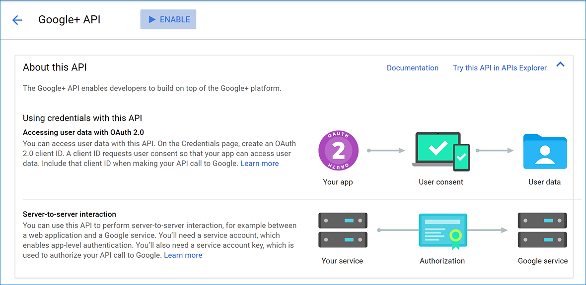

Configuring Google authentication in ASP.NET Core
By Valeriy Novytskyy and Rick Anderson
This tutorial shows you how to enable your users to sign in with their Google+ account using a sample ASP.NET Core 2.0 project created on the previous page. We start by following the official steps to create a new app in Google API Console.
Create the app in Google API Console
- Navigate to https://console.developers.google.com/projectselector/apis/library and sign in. If you don't already have a Google account, use More options > Create account link to create one:

- You are redirected to API Manager Library page:

- Tap Create and enter your Project name:

- After accepting the dialog, you are redirected back to the Library page allowing you to choose features for your new app. Find Google+ API in the list and click on its link to add the API feature:

- The page for the newly added API is displayed. Tap Enable to add Google+ sign in feature to your app:

- After enabling the API, tap Create credentials to configure the secrets:

- Choose:
- Google+ API
- Web server (e.g. node.js, Tomcat), and
- User data:

- Tap What credentials do I need? which takes you to the second step of app configuration, Create an OAuth 2.0 client ID:

Because we are creating a Google+ project with just one feature (sign in), we can enter the same Name for the OAuth 2.0 client ID as the one we used for the project.
Enter your development URI with /signin-google appended into the Authorized redirect URIs field (for example:
https://localhost:44320/signin-google). The Google authentication configured later in this tutorial will automatically handle requests at /signin-google route to implement the OAuth flow.Press TAB to add the Authorized redirect URIs entry.
Tap Create client ID, which takes you to the third step, Set up the OAuth 2.0 consent screen:

Enter your public facing Email address and the Product name shown for your app when Google+ prompts the user to sign in. Additional options are available under More customization options.
Tap Continue to proceed to the last step, Download credentials:

Tap Download to save a JSON file with application secrets, and Done to complete creation of the new app.
When deploying the site you'll need to revisit the Google Console and register a new public url.
Store Google ClientID and ClientSecret
Link sensitive settings like Google Client ID and Client Secret to your application configuration using the Secret Manager. For the purposes of this tutorial, name the tokens Authentication:Google:ClientId and Authentication:Google:ClientSecret.
The values for these tokens can be found in the JSON file downloaded in the previous step under web.client_id and web.client_secret.
Configure Google Authentication
The project template used in this tutorial ensures that Microsoft.AspNetCore.Authentication.Google package is installed.
- To install this package with Visual Studio 2017, right-click on the project and select Manage NuGet Packages.
To install with .NET Core CLI, execute the following in your project directory:
dotnet add package Microsoft.AspNetCore.Authentication.Google
Add the Google service in the ConfigureServices method in Startup.cs file:
services.AddIdentity<ApplicationUser, IdentityRole>()
.AddEntityFrameworkStores<ApplicationDbContext>()
.AddDefaultTokenProviders();
services.AddAuthentication().AddGoogle(googleOptions =>
{
googleOptions.ClientId = Configuration["Authentication:Google:ClientId"];
googleOptions.ClientSecret = Configuration["Authentication:Google:ClientSecret"];
});
Note: The call to AddIdentity configures the default scheme settings. The AddAuthentication(string defaultScheme) overload sets the DefaultScheme property; and, the AddAuthentication(Action<AuthenticationOptions> configureOptions) overload sets only the properties you explicitly set. Either of these overloads should only be called once when adding multiple authentication providers. Subsequent calls to it have the potential of overriding any previously configured AuthenticationOptions properties.
See the GoogleOptions API reference for more information on configuration options supported by Google authentication. This can be used to request different information about the user.
Sign in with Google
Run your application and click Log in. An option to sign in with Google appears:

When you click on Google, you are redirected to Google for authentication:

After entering your Google credentials, then you are redirected back to the web site where you can set your email.
You are now logged in using your Google credentials:

Troubleshooting
- If you receive a
403 (Forbidden)error page from your own app when running in development mode (or break into the debugger with the same error), ensure that Google+ API has been enabled in the API Manager Library by following the steps listed earlier on this page. If the sign in doesn't work and you aren't getting any errors, switch to development mode to make the issue easier to debug. - ASP.NET Core 2.x only: If Identity is not configured by calling
services.AddIdentityinConfigureServices, attempting to authenticate will result in ArgumentException: The 'SignInScheme' option must be provided. The project template used in this tutorial ensures that this is done. - If the site database has not been created by applying the initial migration, you will get A database operation failed while processing the request error. Tap Apply Migrations to create the database and refresh to continue past the error.
Next steps
This article showed how you can authenticate with Google. You can follow a similar approach to authenticate with other providers listed on the previous page.
Once you publish your web site to Azure web app, you should reset the
ClientSecretin the Google API Console.Set the
Authentication:Google:ClientIdandAuthentication:Google:ClientSecretas application settings in the Azure portal. The configuration system is set up to read keys from environment variables.